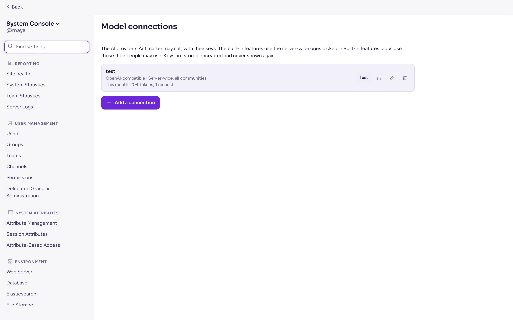
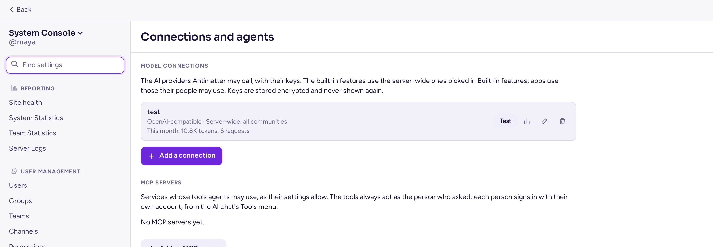
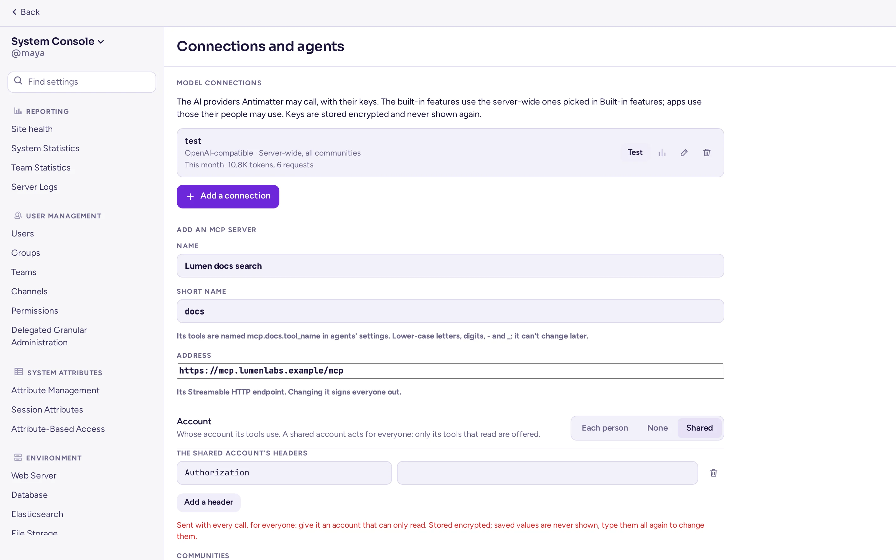
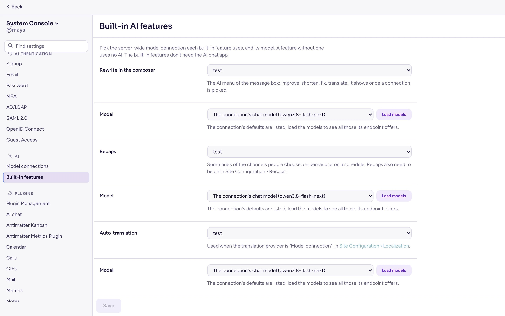
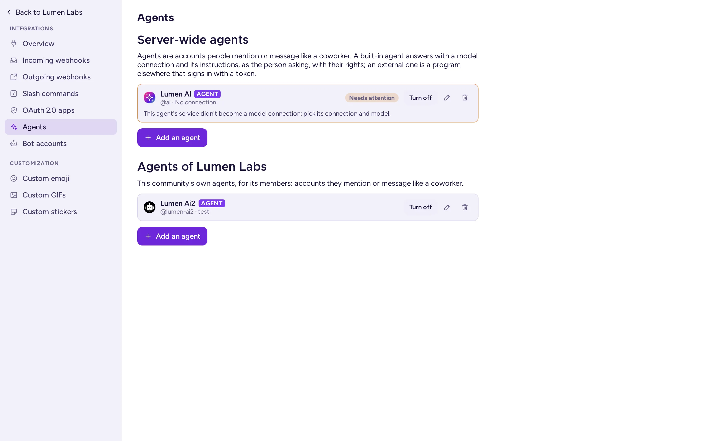
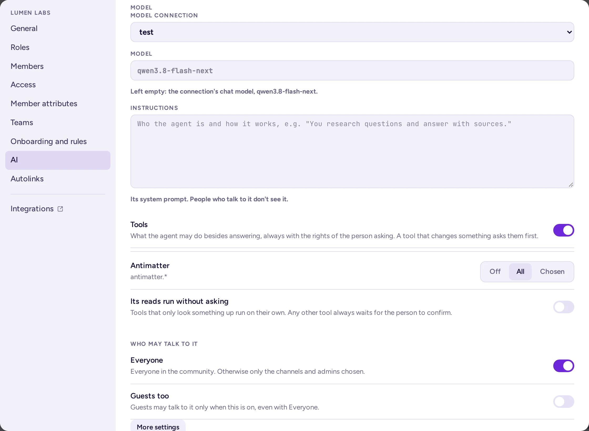

IA
Les funcions d'IA d'Antimatter utilitzen models que triïs: un proveïdor en la núvol o un servidor a la teva xarxa. No s'envia res enlloc fins que configureu un model. Aquesta pàgina cobreix les connexions de models, cada funció, les dades que envia i com desactivar-la.
Les funcions d'IA
| Funció | Configurada a | Tipus de model | Activada per defecte |
|---|---|---|---|
| Reescriptura al compositor: millora, acurta, corregeix o tradueix un missatge abans d'enviar-lo | IA › Funcions integrades, amb una connexió de model | Un model de xat (LLM) | no |
| Resums: resums dels canals que triïn les persones | IA › Funcions integrades, amb una connexió de model | Un model de xat (LLM) | no |
| Traducció automàtica de canals | Configuració del lloc › Localització | Una connexió de model, LibreTranslate o una API compatible amb OpenAI | no |
| Lectura en veu alta | Integracions › Text a veu, opcionalment amb una connexió de model | Síntesi de veu, compatible amb OpenAI | no |
| Agents d'IA: assistents que les persones mencionen o als quals envien missatges, i als quals demanen resums de fils, canals i trucades | IA › Connexions de models, o la pestanya d'IA d'una comunitat, amb una connexió de model | Un model de xat (LLM) | no: no hi ha cap agent fins que n'afegeixes un |
| Transcripcions de trucades i subtítols en directe | L'aplicació Trucades | Transcripció de veu, compatible amb OpenAI | no |
"Compatible amb OpenAI" significa un servidor que ofereix la mateixa API HTTP que OpenAI. La majoria dels servidors de models que pots executar tu mateix ho fan (per exemple Ollama, vLLM, el servidor de llama.cpp, o servidors de Whisper i text a veu), així com molts proveïdors en la núvol i passarelles com LiteLLM o OpenRouter. No cal cap llicència per a cap d'aquestes funcions.
Les funcions integrades (reescriure, resums, traducció i lectura en veu alta) i els agents no necessiten cap aplicació: utilitzen les connexions de models que afegeixis a la Consola del sistema.
Connexions de models
Una connexió de model és un proveïdor d'IA que Antimatter pot cridar: la seva adreça, la seva clau i els seus models. L'afegiu un cop i després el trieu per a cada funció que hauria d'utilitzar-lo. Hi ha dos tipus:
- Connexions de tot el servidor, gestionades per administradors del sistema a la Consola del sistema › IA › Connexions de models. Només elles poden oferir les funcions integrades. Les aplicacions també les poden utilitzar, per a les persones autoritzades.
- Connexions de comunitat, que els administradors d'una comunitat afegixen per a la seva pròpia comunitat a la configuració de la comunitat (vegeu a continuació). Les aplicacions les utilitzen per a les persones de la comunitat. Mai serveixen les funcions integrades.
La secció IA de la Consola del sistema es mostra a les persones que poden gestionar les connexions de tot el servidor: administradors del sistema, de manera predeterminada. La seva pàgina Connexions de models (la mateixa adreça que abans, admin_console/ai/model_connections) enumera les connexions de tot el servidor i les de cada comunitat, després els agents de tot el servidor (vegeu Agents d'IA).

Afegeix una connexió
A Consola del sistema › IA › Connexions de models, sota Connexions de models, feu clic a Afegeix una connexió i, a continuació, ompliu el formulari:
| Camp | Què introduir |
|---|---|
| Preconfiguracions | Ompliu el proveïdor i l'adreça d'un servei conegut: OpenAI, Mistral, Gemini, OpenRouter, o Ollama i LiteLLM al mateix servidor. Opcional. |
| Nom | El nom que veuen els administradors quan l'escullen, per exemple «OpenAI de l'empresa». |
| Proveïdor | Compatible amb OpenAI (la majoria de proveïdors, passarelles i servidors de models que executeu vosaltres mateixos) o Anthropic. Els serveis en la núvol amb el seu propi inici de sessió, com ara AWS Bedrock, Google Vertex AI o Azure amb Entra ID, s'han de connectar mitjançant el seu punt d'accés compatible amb OpenAI o una passarella com LiteLLM. |
| URL base | L'adreça de l'API, fins i tot incloent-hi /v1, per exemple http://ollama:11434/v1. Si es deixa buit, s'utilitza la del propi proveïdor (https://api.openai.com/v1 o https://api.anthropic.com/v1). |
| Clau d'API | La clau del proveïdor. Deixeu-la buida si el punt d'accés no en necessita. Es desa xifrada i mai no es mostra de nou: el formulari només mostra els darrers quatre caràcters i ofereix mantenir-la, substituir-la o eliminar-la. |
| Càpçals addicionals | Càpçals per enviar amb cada sol·licitud, per a una passarella que els requereixi. Els seus valors es desen xifrats com la clau i mai no es mostren de nou: per canviar-los, cal escriure'ls tots de nou. |
| Models | El model utilitzat per a cada capacitat quan una funció o una aplicació no n'especifica un: Xat, Embeddings, Transcripció i Decisions. Carrega models llista els models que ofereix el punt d'accés. Deixeu una capacitat buida si el punt d'accés no l'ofereix. Les connexions d'Anthropic només fan xat. |
| API de decisions | Com s'invoca el model de decisions: Decisions d'OpenAI o SystemOne. Només és rellevant per a les aplicacions que demanen decisions. |
| Límits | Vegeu Límits i pressupostos. |
| Comunitats | Només connexions de tot el servidor. Totes les comunitats: utilitzable en totes les comunitats, i en missatges directes i de grup. En cas contrari, només en les comunitats que trieu. |
| Qui pot utilitzar-lo | Tothom on sigui utilitzable, o només els equips (grups de persones dins d'una comunitat) i els rols que trieu (Administradors del sistema, Administradors de la comunitat). També invitats permet als invitats utilitzar-lo; sense aquesta opció, no ho poden fer, ni tan sols amb Tothom. |
Provar connexió comprova l'adreça i la clau: el servidor demana al punt d'accés els seus models, o envia un xat d'un sol token. Una adreça canviada es prova amb la clau desada només després de desar, o si escriviu la clau de nou. Feu clic a Afegeix connexió per desar.
El servidor fa les peticions per si mateix, per la qual cosa ha d'arribar a l'API: un servidor de models al mateix projecte de compose, a la vostra xarxa o a Internet. Les peticions sortents respecten les variables HTTP_PROXY i HTTPS_PROXY.
Si suprimiu una connexió, se'n perd la clau. Les funcions que l'utilitzaven deixen d'usar la IA fins que n'escolliu una altra.


Límits i pressupostos
Cada connexió té quatre límits. Si un camp és buit o 0, no hi ha cap límit.
- Peticions per minut i Per persona, peticions per minut. Cada servidor les compta per separat: un clúster de tres servidors deixa passar fins a tres vegades la taxa.
- Tokens per mes i Per persona, tokens per mes: pressupostos de tokens, per mes calendàric (UTC), comptats a la base de dades per a tot el clúster. Diferents peticions que s'executen al mateix moment poden superar lleugerament un pressupost.
Els límits per persona també s'apliquen a la reescriptura i als resums: es compten contra la persona que reescriu o que és la propietària del resum.
Ús
La llista mostra l'ús d'aquest mes de cada connexió. Ús obre els detalls: tokens d'entrada i de sortida, peticions, el pressupost mensual, l'ús per dia (UTC) i per ús (Reescriu, Resums, Traducció automàtica, Text a veu, Persones, a través d'aplicacions o una aplicació).
Cada crida que una persona o una aplicació fa a través d'una connexió també escriu un registre d'auditoria: qui, la connexió, l'ús, el model, el nombre de tokens i si ha funcionat, mai el que s'ha dit. Les funcions integrades només es compten a l'ús: la traducció, per si sola, fa una crida per missatge i per idioma.
Connexions de comunitat
Els administradors de la comunitat afegeixen les seves pròpies connexions a la configuració de la comunitat, a la pestanya IA, sota Connexions de models. El formulari és el mateix, sense Comunitats: una connexió de la comunitat només funciona als seus propis canals, per als seus propis membres, i el seu públic només pot nomenar els seus propis equips. Els rols amb el permís Gestiona les connexions de models també les poden gestionar. De manera predeterminada, els administradors de la comunitat en disposen.
La connexió d'una comunitat no pot arribar a adreces privades o de loopback (per exemple, un servidor Ollama a la vostra xarxa), llevat que Consola del sistema › Entorn › Desenvolupador › Permet connexions internes no fiables a (ServiceSettings.AllowedUntrustedInternalConnections) les llisti. Les connexions de tot el servidor sí que hi poden arribar.
Vegeu Configuració de la comunitat per al costat dels administradors de comunitat.
Servidors MCP
Un servidor MCP és un servei que ofereix eines a través del Model Context Protocol, que els agents poden utilitzar. Els servidors MCP s'enumeren sota les connexions de models, a Consola del sistema › IA › Connexions de models (de tot el servidor) o a la pestanya IA d'una comunitat (les seves pròpies), gestionats pels mateixos permisos que les connexions de models. Afegiu-ne un amb el seu:
| Camp | Què introduir |
|---|---|
| Nom, i un Nom curt | El nom curt (un slug) mai canvia un cop definit: anomena les eines del servidor, mcp.<short name>.<tool>. |
| Adreça | El punt final HTTP Streamable del servidor. |
| Compte | Cada persona inicia sessió (OAuth: un ID de client opcional, ja que Antimatter es pot registrar sol; un secret de client d'escriptura només; àmbits; la devolució és /api/v4/ai/mcp/oauth/callback, que necessita que l'URL del lloc estigui configurat), Cap, o Un compte compartit (capçaleres, d'escriptura només): només s'ofereixen a través d'un compte compartit les eines d'aquell servidor que llegeixen. |
| Compartició | Només servidors de tot el servidor: quines comunitats el poden utilitzar. Els servidors MCP propis d'una comunitat són només per als agents d'aquella comunitat. |
El servidor MCP d'una comunitat no pot accedir a adreces internes llevat que Permet connexions internes no fiables a les permeti, com passa amb les connexions de models de la comunitat; l'adreça declarada pel propi servidor d'abast global sempre és accessible. Les sol·licituds MCP mai segueixen una redirecció. Canviar l'adreça o el tipus de compte d'un servidor tanca la sessió de tothom; eliminar-ne un fa oblidar la sessió iniciada de tothom.
La clau de xifratge
Les claus i les capçaleres addicionals de les connexions de models s'xifren a la base de dades (AES-256-GCM) amb una sola clau de xifrat. Una còpia de seguretat de la base de dades per si sola no les revela. El servidor cerca la clau en aquest ordre:
- La variable
AM_AI_ENCRYPTION_KEY: 32 bytes aleatoris, en base64. En crea un ambopenssl rand -base64 32. - En cas contrari, el fitxer
ai-encryption.keya l'arrel del directori de dades del servidor (FileSettings.Directory,./data/per defecte). El servidor el crea, només llegible per ell mateix, la primera vegada que una connexió el necessita. Les aplicacions, les exportacions i els arxius de fitxers no el poden llegir.
Quan cal establir la variable:
- En el fitxer compose del lloc.
compose.yamlpassaAM_AI_ENCRYPTION_KEYdes de.envi manté el fitxer de la clau al volumdataquan la variable és buida. És millor establir la variable: la còpia de seguretat de.envllavors conté la clau, separada de la base de dades. Afegiu-la a.envi executeudocker compose up -d:
Si el servidor ja ha creat el seu fitxer de clau, poseu la clau que conté aecho "AM_AI_ENCRYPTION_KEY=$(openssl rand -base64 32)" >> .env.enven lloc d'una de nova, perquè les claus desades continuïn sent llegibles:docker compose exec antimatter cat /antimatter/data/ai-encryption.keyla mostra. - Un clúster els fitxers del qual estan a S3. Els seus servidors no comparteixen cap directori, així que el servidor no crea el fitxer: establiu la mateixa variable en cada servidor. Fins que no s'estableixi, les connexions no poden desar claus.
- Amb l'arxiu de la versió o els paquets, el fitxer està a
data/(/var/lib/antimatter/dataper als paquets). Podeu mantenir-lo allà, o establir la variable al vostre fitxer d'entorn.
Per canviar la clau, establiu la nova a AM_AI_ENCRYPTION_KEY i l'antiga a AM_AI_ENCRYPTION_PREVIOUS_KEYS (varies claus separades per comes): les claus desades amb l'antiga encara es poden llegir. La clau d'una connexió s'xifra amb la nova clau quan la torneu a escriure. Mantingueu la clau antiga a la llista fins que hagueu tornat a escriure la clau de totes les connexions.
Les funcions integrades
A Consola del sistema › IA › Funcions integrades, tria per a cada funció una connexió de tot el servidor i el seu model, o bé Desactivat. Una funció sense connexió no utilitza IA. Carrega els models llista tots els models de la connexió; per defecte, cada funció utilitza el model de xat de la connexió.
| Funció | Paràmetre | Què més necessita |
|---|---|---|
| Reescriu a l'editor: el menú d'IA de la caixa de missatges (millora, acurta, corregeix, tradueix) | AISettings.Rewrite | Res: el menú apareix quan es tria una connexió. |
| Resums: resums dels canals que les persones triïn, sota demanda o segons un horari | AISettings.Recaps | Activa els resums d'IA a Consola del sistema › Configuració del lloc › Resums (activat per defecte), que també estableix quants resums poden fer les persones. |
| Traducció automàtica | AISettings.AutoTranslation | El proveïdor de traducció Connexió de model (recomanat), a Traducció automàtica. |
| Text a veu | AISettings.TextToSpeech | Llegeix els missatges en veu alta activat, a Text a veu. El punt d'accés /audio/speech de la connexió substitueix l'adreça i la clau establertes allà. |
Cada configuració té una clau ConnectionId i una clau Model, per exemple AISettings.Rewrite.ConnectionId (AM_AISETTINGS_REWRITE_CONNECTIONID). Un Model buit utilitza el model per defecte de la connexió.

Les funcions integrades utilitzen els límits de la connexió, però no el seu públic: tothom que pot utilitzar la funció pot utilitzar la seva connexió. Una connexió que requereix atenció, o que s'ha suprimit, fa que la funcioni falli fins que en triïs una altra: la pàgina ho indica.
Agents d'IA
Un agent és un compte que les persones mencionen o al qual envien missatges com si fos un/a company/a, mostrat amb l'etiqueta AGENT. Els agents formen part del servidor. N'hi ha de dos tipus:
- Integrat: Antimatter respon per l'agent quan algú el menciona, li envia un missatge o respon als seus fils, utilitzant una connexió de model i les instruccions de l'agent. Respon com la persona que pregunta, amb els seus drets: el seu accés a la connexió, i els seus límits i pressupost.
- Agent extern: un programa en un altre lloc (un agent de codificació en un projecte, per exemple) inicia sessió amb el testimoni de l'agent i respon com ho faria una persona. Antimatter no respon per ell. Consulta Agents a la guia per a desenvolupadors.
Els administradors del sistema gestionen els agents d'abast global a Consola del sistema › IA › Connexions de models, per sota de les connexions de models. Els administradors d'una comunitat gestionen els seus propis agents a la pestanya IA de la configuració de la comunitat, per sota de les connexions de models (vegeu Configuració de la comunitat). Ningú més pot crear agents.

Afegeix un agent
A Consola del sistema › IA › Connexions de models (o a la pestanya IA d'una comunitat), feu clic a Afegeix un agent i, a continuació, ompliu el formulari:
| Camp | Què introduir |
|---|---|
| Tipus | Integrat o Agent extern. |
| Nom per mostrar, Nom d’usuari, Descripció | Com es mostra l'agent. El nom d'usuari és com el mencionen les persones: de 3 a 22 lletres minúscules, dígits, punts, guions o guions baixos, començant per una lletra. La descripció es mostra al seu perfil. |
| Connexió de model i Model | Només per als agents integrats. Un agent d'espai de treball utilitza una connexió de l'espai de treball; un agent de comunitat utilitza les connexions de la seva comunitat o una de compartida amb la comunita. Deixa Model buit per utilitzar el model de xat de la connexió. |
| Instruccions | Només per als agents integrats. El prompt del sistema de l'agent (fins a 32.000 caràcters): qui és i com funciona. Les persones que parlen amb ell no el veuen. |
| Qui pot parlar amb ell | Tothom (a l'espai de treball, o a la comunitat per a un agent de comunitat), o només els rols (Administradors del sistema, Administradors de comunitat), les comunitats i els canals que triïs. També els convidats permet que els convidats parlins amb ell; sense aquesta opció, no poden, ni tan sols amb Tothom activat. |
| Més configuracions | Només per als agents integrats. Razonament (Desactivat, Mínim, Baix, Mitjà o Alt), per a models que poden pensar abans de respondre: més lent, sovint millor. Torns d'eines: quantes vegades seguides pot utilitzar eines abans de respondre, fins a 250 (30 si està buit). |
Fes clic a Afegeix agent. Un agent de comunitat s'uneix a la seva comunitat. Cada agent de la llista mostra la seva connexió i el seu model (o "Extern"), si està desactivat i què requereix la teva atenció. Des de la llista pots editar un agent (també la seva imatge), activar-lo o desactivar-lo (ningú pot parlar amb un agent desactivat) o eliminar-lo: el seu compte es desactiva i la seva configuració s'oblida, però els seus missatges es conserven.

Eines
El commutador Eines del formulari de l'agent activa les eines per a l'agent i, a continuació, ofereix, per a cada font (les eines pròpies d'Antimatter, les de cada aplicació en execució i les de cada servidor MCP disponible en l'àmbit de l'agent): Desactivat, Tot o Seleccionades, i Les seves lectures s'executen sense preguntar. Les eines sempre actuen com la persona que ha fet la pregunta, amb els seus propis drets, mai com l'agent.
- Una lectura que la política de l'agent permet executar per si sola s'executa immediatament. Qualsevol altra crida (qualsevol escriptura i una lectura no configurada per executar-se per si sola) espera la persona: es mostra a la resposta de l'agent amb Confirma i Rebutja, els arguments exactes i un termini per respondre; només aquesta persona pot respondre, i l'agent, l'eina i l'accés de la persona es tornen a comprovar quan confirma. Una crida rebutjada no s'executa, i l'agent no en diu res més.
- Una eina MCP compta com a lectura només quan el seu servidor la marca com a tal; tota la resta és una escriptura. Un compte compartit (vegeu Servidors MCP) només ofereix les eines d'aquell servidor que fan lectures.
- Les opcions d'eines pròpies d'una persona, a la configuració del xat d'IA, són una preferència per a tots els agents: només poden restringir el que la política de l'agent permet, mai ampliar-ho.
- Les eines pròpies d'Antimatter, de moment: cercar missatges, llegir un fil, llegir un canal, buscar algú i publicar un missatge, que sempre necessita confirmació.
- Cada crida d'eina es registra al registre d'auditoria: qui, l'eina, l'agent, on, com es va decidir i el resultat, així com la mida i un hash dels arguments, mai el seu contingut.

On responen els agents
- Un agent integrat respon a un missatge que el menciona (fins a tres agents per missatge), a un missatge en un missatge directe amb ell i a una resposta en un fil que ha iniciat o en el qual se li ha preguntat i que no menciona ningú més. Respon al fil del missatge.
- Una persona que no pot parlar amb ell rep un avís que només veu ella: "@agent no està disponible per a tu aquí."
- Els agents no responen a bots, aplicacions, webhooks ni a altres agents.
- Cada resposta es dona una sola vegada, per un servidor d'un clúster.
L'aplicació de xat amb IA
L'aplicació de xat d'IA (id mattermost-ai, activada per defecte) és el panell lateral on les persones parlen amb els agents que poden utilitzar: mostra les seves converses amb els agents i ofereix resums del canal que estan llegint. També afegeix les accions d'IA del menú del missatge (Resumeix el fil, Troba elements d'acció, Troba preguntes obertes), el menú Pregunta a la IA de la línia de nous missatges i l'opció Crea un resum de la reunió de les trucades, que consulten l'agent de la persona a través del servidor i reben resposta en el seu missatge directe amb ell. Quan no hi ha cap agent per oferir, el seu panell envia els administradors a Consola del sistema › IA › Connexions de models, o un administrador de la comunitat a la pestanya d'IA de la seva comunitat.
L'aplicació encara té la seva pròpia configuració, ara a Consola del sistema › IA › Aplicació de xat d'IA (la pàgina de connectors per a ella ha desaparegut; la vella adreça redirigeix), amb els seus propis Serveis d'IA, per a les funcionalitats que encara són seves: Reacciona per mi, cerca d'IA, indicacions personalitzades, les respostes automàtiques dels canals configurats per a això i els resums automàtics de les transcripcions de les trucades. La seva Cerca d'incorporacions (experimental, desactivada) alimenta la cerca d'IA: necessita PostgreSQL amb l'extensió pgvector i un model d'incorporacions, i envia tots els missatges al model d'incorporacions, inclosos els canals privats i els missatges directes. A DEBUG, Sortida de traça (desactivada, registres del servidor o un punt final d'OpenTelemetry) i Activa el registre de l'ús de tokens (escriu a logs/agents/token_usage.log) ajuden a trobar problemes.
Veu a text: transcripcions i subtítols de trucades
Les trucades es poden transcriure, amb subtítols en directe, mitjançant un servidor de reconeixement de veu a text que ofereix un punt final /v1/audio/transcriptions compatible amb OpenAI. La configuració es troba a Trucades i veu. Amb Resumeix les transcripcions activat, l'agent predeterminat de l'aplicació de xat amb IA també publica un resum de cada transcripció. Les persones també poden demanar-ne un al seu propi agent amb Crea un resum de la reunió.
Text a veu: llegeix en veu alta
Amb el text a veu activat, el menú de cada missatge inclou Llegeix en veu alta: el servidor envia el text del missatge a una API de text a veu i reprodueix l'àudio. La configuració es troba a Consola del sistema › Integracions › Text a veu:
| Paràmetre | Clau i variable | Què introduir |
|---|---|---|
| Llegeix els missatges en veu alta | TextToSpeechSettings.Enable, AM_TEXTTOSPEECHSETTINGS_ENABLE | true (desactivat per defecte) |
| URL base de l'API | TextToSpeechSettings.URL, AM_TEXTTOSPEECHSETTINGS_URL | La URL base fins a /v1 inclòs, per exemple http://tts.internal:8000/v1. El servidor crida el seu punt d'accés /audio/speech. |
| Model | TextToSpeechSettings.Model, AM_TEXTTOSPEECHSETTINGS_MODEL | El model amb el nom que li dona l'API, per exemple tts-1. Obligatori. |
| Veu | TextToSpeechSettings.Voice, AM_TEXTTOSPEECHSETTINGS_VOICE | Una de les veus del model, o buit per utilitzar-ne la per defecte. |
| Clau d'API | TextToSpeechSettings.APIKey, AM_TEXTTOSPEECHSETTINGS_APIKEY | S'envia com a testimoni de portador (bearer token). Deixeu-lo buit si l'API no n'ha de tenir cap. |
Per utilitzar una connexió de model en lloc de l'adreça i la clau anteriors, trieu-la per a Text a veu a IA › Funcions integrades. La pàgina indica llavors que els missatges es llegeixen en veu alta amb aquesta connexió: URL base de l'API i Clau d'API no s'utilitzen, Veu encara s'utilitza, i també Model quan la connexió no especifica cap model. Llegeix els missatges en veu alta ha de continuar activat.
Abans d'enviar-lo, el servidor elimina els blocs de codi, els enllaços, els codis d'emoji i el format, i conserva com a màxim 4000 caràcters. Sol·licita àudio MP3 i conserva els darrers 64 resultats a la memòria, de manera que un missatge que es llegeix dues vegades només s'envia una.
Traducció automàtica
La traducció automàtica mostra els missatges d'un canal en la llengua pròpia de cada lector. Configureu-la a Consola del sistema › Configuració del lloc › Localització, sota Traducció automàtica:
| Paràmetre | Clau | Valor per defecte |
|---|---|---|
| Activa | AutoTranslationSettings.Enable | desactivat |
| Proveïdor de traducció | AutoTranslationSettings.Provider | connection (mostrat com «Connexió de model (recomanat)», el que es tria quan no n'hi ha cap establert), libretranslate, openai («API compatible amb OpenAI, configurada aquí») o agents («Servei de l'aplicació de xat d'IA (més antic)») |
| Llengües permeses | AutoTranslationSettings.TargetLanguages | en: les llengües en què es poden traduir els missatges |
| Temps d’espera de la traducció (ms) | AutoTranslationSettings.TimeoutMs | 5000 |
| Limita la traducció automàtica als missatges directes i als missatges de grup | AutoTranslationSettings.RestrictDMAndGM | desactivat |
Cada proveïdor té els seus camps propis:
- Connexió de model: una connexió a nivell de servidor i el seu model, la mateixa configuració que Traducció automàtica a IA › Funcions integrades (
AISettings.AutoTranslation). Un model de traducció dedicat és ràpid i precís; un LLM general també funciona. - LibreTranslate: Punt d’accés de l’API de LibreTranslate i Clau d’API de LibreTranslate (
AutoTranslationSettings.LibreTranslate.URL,.APIKey). Un servidor de LibreTranslate es pot executar a la vostra pròpia xarxa. - API compatible amb OpenAI: URL base de l'API (fins a
/v1inclòs; el servidor n'utilitza el punt d'accés de completaments de xat), Model i Clau d'API (AutoTranslationSettings.OpenAI.URL,.Model,.APIKey). Funciona bé un petit model de traducció executat localment. - Servei de l'aplicació de xat d'IA (més antic): el proveïdor dels servidors configurats abans de la 0.9.0, que utilitzaven un servei de l'aplicació Agents. Ja no necessita l'aplicació: tradueix amb la connexió triada per a la traducció automàtica a IA › Funcions integrades, o bé amb la connexió copiada del servei de l'aplicació durant la actualització. Canvia a Connexió de model mou la configuració al proveïdor recomanat.
Quan està activat, els administradors de canal activen la traducció per a un canal a la seva configuració (Traducció automàtica), i cada membre pot desactivar-la des del menú del canal (Tradueix els missatges). En missatges directes i de grup, qualsevol membre pot activar-la; amb la restricció activada, la traducció no hi està disponible. Els missatges traduïts mostren «Traduït de…» amb un enllaç a l'original.
El codi, els enllaços, les mencions i els emoji es substitueixen per marcadors abans d'enviar el text i es restitueixen després.
Quins dades van on
| Funció | Què s'envia | A |
|---|---|---|
| Reescriu | El missatge que s'està escrivint, i la instrucció triada | La connexió triada per a això |
| Resums | Els missatges dels canals de la ressenya, i les instruccions de la persona | La connexió triada per a això |
| Aplicacions que utilitzen connexions de model | Què envia cada aplicació, per a la persona que l'utilitza | Les connexions que la persona pot utilitzar |
| Agents | Les instruccions de l'agent; el fil fins a la pregunta (com a màxim els seus 50 missatges més recents) i fins a tres missatges als quals enllaça que la persona que pregunta pot llegir; el nom i el nom d'usuari de la persona que pregunta, on ho va preguntar i la data; per a un resum, el fil, els missatges del canal (com a màxim 200) o la transcripció de la trucada | La connexió del model de l'agent |
| Eines dels agents | Els arguments d'una crida d'eina, amb l'inici de sessió propi de la persona que pregunta a aquell servidor MCP (segellat, mai mostrat a ningú, ni als paquets de suport) | Les eines pròpies d'Antimatter, l'aplicació que va registrar l'eina o el servidor MCP, amb els drets de la persona que pregunta; el registre d'auditoria conserva qui, l'eina, l'agent, on, com es va decidir i el resultat, així com la mida dels arguments i un hash, mai el seu contingut |
| Les funcionalitats pròpies de l'aplicació de xat amb IA | El que llegeix cada funcionalitat, com ara el missatge per a Reacciona per mi; amb la cerca d'incorporacions, tots els missatges (excepte els dels bots i els del sistema) | Els serveis d'IA de l'aplicació i la seva API d'incorporacions |
| Transcripció de trucades | La veu de tothom qui parla mentre està activada | L'API de veu a text |
| Lectura en veu alta | El text del missatge que es llegeix | L'API de text a veu, o la connexió triada per a això |
| Traducció | El text dels missatges en canals traduïts | La connexió de model, LibreTranslate o l'API compatible amb OpenAI |
Per mantenir-ho tot a la vostra xarxa, apunteu cada funció a servidors que executeu vosaltres mateixos. Amb un proveïdor en la núvol, reviseu les seves condicions de retenció de dades i informeu els vostres usuaris de quines funcions envien els seus missatges cap a l'exterior.
Desactivar la IA
No hi ha un únic interruptor: cada funció en té el seu propi.
- Reescriptures i resums: configura-los a Desactivat a Consola del sistema › IA › Funcions integrades. La gent continua llegint els resums que ja té.
- Connexions de models: suprimiu una connexió per aturar-ne tot l'ús. Sense cap connexió, ni les funcions integrades ni les aplicacions poden utilitzar la IA a través del servidor.
- Agents: desactiveu o elimineu cada agent a la Consola del sistema › IA › Connexions de models i a les pestanyes d'IA de les comunitats. Desactivar l'aplicació de xat d'IA només n'elimina el panell lateral i les seves pròpies funcionalitats (incloses les resums de les trucades): les persones encara poden mencionar o enviar missatges als agents.
- Transcripció i subtítols:
AM_CALLS_ENABLE_TRANSCRIPTIONS=falseiAM_CALLS_ENABLE_LIVE_CAPTIONS=false(els valors per defecte). - Llegeix en veu alta: desactiveu Llegeix els missatges en veu alta (
AM_TEXTTOSPEECHSETTINGS_ENABLE=false, el valor per defecte), independentment de si utilitza una connexió o no. - Traducció: desactiveu la traducció automàtica (
AM_AUTOTRANSLATIONSETTINGS_ENABLE=false, el valor per defecte).
Desactivar l'aplicació de xat d'IA no desactiva les altres funcionalitats: aquestes utilitzen connexions de models o les seves pròpies APIs.